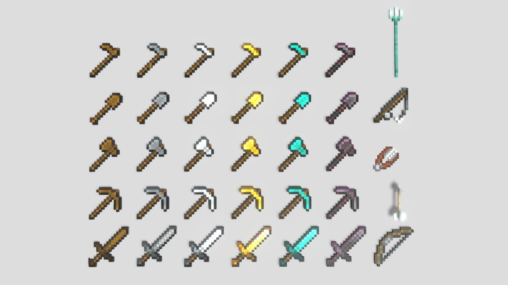
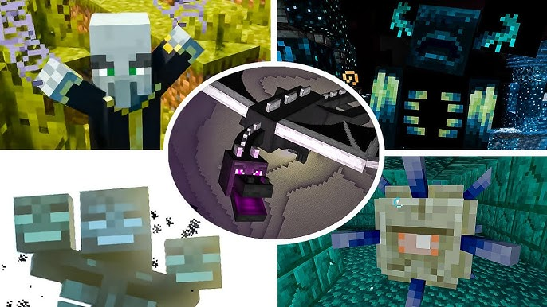
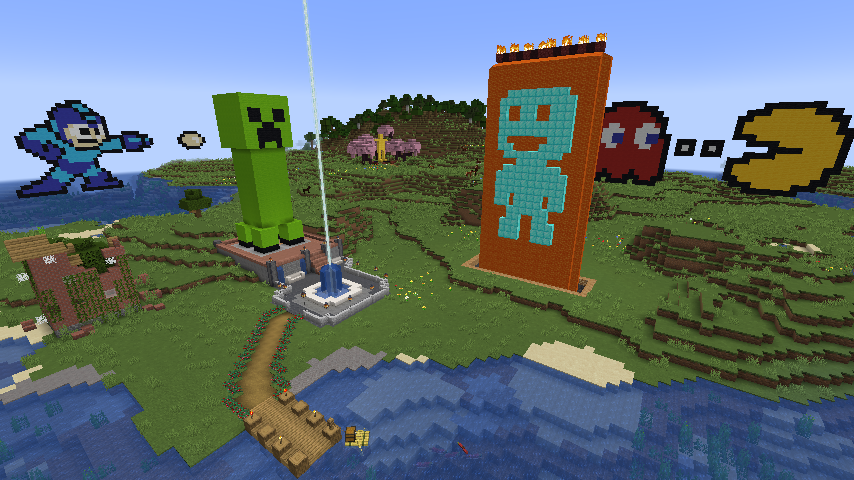
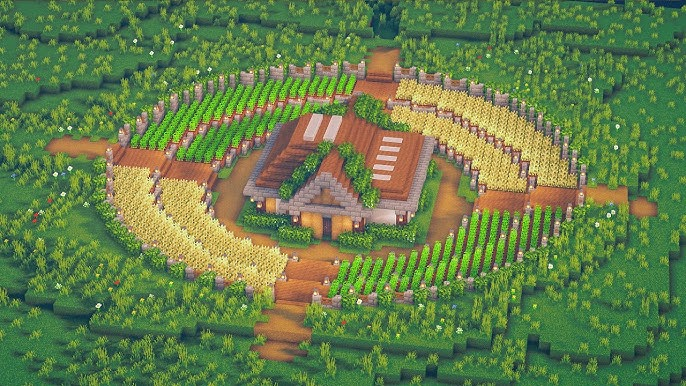
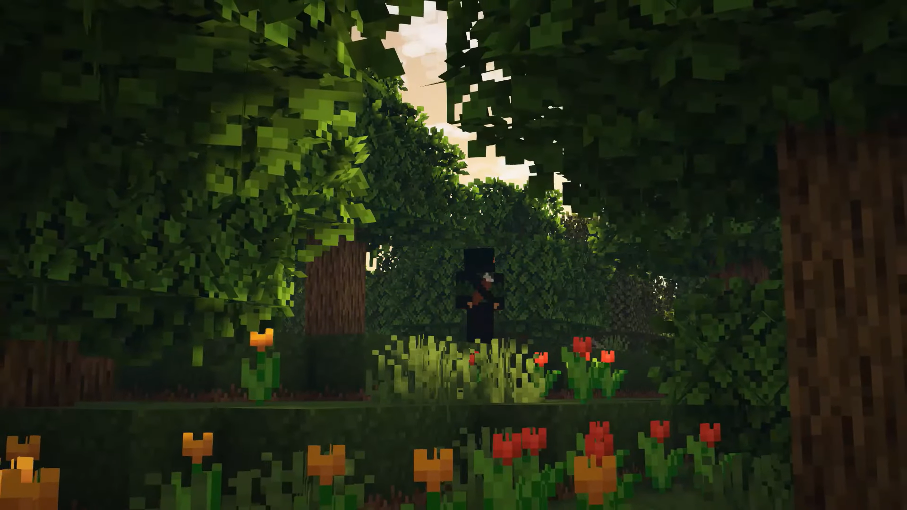
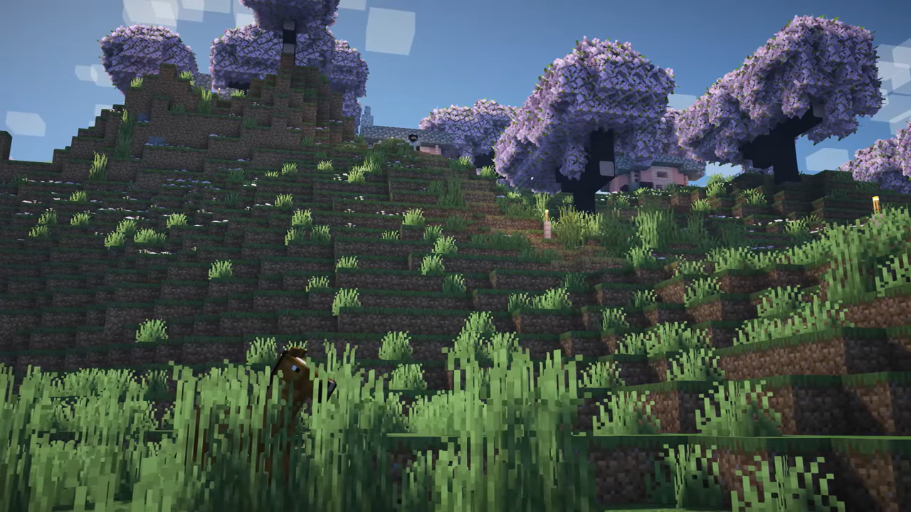

Singleplayer is the classic Minecraft experience. You start alone in a randomly generated world with nothing in your inventory. Your first goal is simple: survive.
At the beginning, most players collect wood, craft basic tools, build a shelter, and prepare for the first night. When the sun goes down, hostile mobs like zombies, skeletons, spiders, and creepers begin to appear. If you are not ready, the night can become dangerous very quickly.


CREATIVE MODE
Singleplayer is not only about survival. In Creative Mode, players get unlimited blocks and can fly. This mode is perfect for building huge houses, castles, pixel art, redstone machines, farms, cities, or anything else you can imagine.


Watch some straight up Singleplayer gameplay
WHY PLAY SINGLEPLAYER?
Singleplayer is great because you can play at your own pace. You do not need to rush, compete, or follow anyone else. You can build a cozy house, start a hardcore world, explore caves, create redstone machines, or simply enjoy the music and atmosphere.

